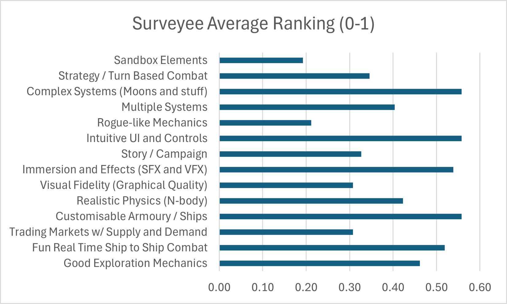

By Liam Moorhouse
This version is a link because I created the portfolio as a website. If a link is not good enough, there are two ways to download the files. First is plain text, without images. Second is the full folder, but it is more cluttered.
If the raw text version (no images) is required press to download "website.txt", which contains only the stored text in this website.
If a version with images is needed, press to download the website files. If you choose this second option, you can view the website offline by extracting the .zip file, and opening "index.html". The images in the .zip folder must stay as "siblings" to index.html if they are to display on the website. Normally I would attach a .zip with instructions like these, but Daymap has file restrictions for .zip files (such as size and allowed file types).
To start AIF, I had to create a project for myself, and to choose a project, I needed to explore some of my interests and use those to my advantage. For this, I created a Lotus Diagram of several of my interests, and from that I thought of possible projects that I could partake in.
This lotus diagram shows many topics close to my heart, such as computer science and mathematics. Looking at my options, I set my mind on exploring my skill in Computer Science and code development, due to previous expertise I built up. From there I begun looking into a potential project.
The first potenential project that I invested time in reasearch was trying to learn HTMX, a coding language for websites. I was interested in this, because it seemed to be a replacement for many if the functions of Javascript, a common, yet flawed language, with few possible replacements. I knew from previous expirience that HTML5 was a skill of mine, that was held back by a refusal to learn Javascript, but this could have been a solution.
That was until I started prelimiary research.
From an analysis of the HTMX organisation webpage, it seems that HTMX would not be as fitting a replacement as I orginally thought. While HTMX does replace many of the features of Javascript, it is best sat to replace React.js, a library for Javascript. For those not in the know about website developement, React.js is a package how Javascript that extends it's functionality. In this way, HTMX stands as a thing to use with Javascript for interactive web UI, as opposed to instead of it. Seeing that HTMX did not fufil the purpose I expected it to, I chose to set my sights on a different project.
The second project I considered was creating a game. A video game that was mix of several niches, with inspiration from several sources. Firstly, from Kerbal Space Program, a game about the exploration of the Kerbol system. Secondly, from a mod for the game, which introduced a realistic n-body gravity simulation. Thirdly, from a seperate space faring game called Elite Dangerous, which depicts intergallactic trade between space stations thousands throughout the milkyway. Forthly, from youtube creators, such as Sebastian Lague, and Acerola, who undertake learning and applications of shader language. From this an idea formed in my head, of a 2D gravity simulation, space exploration game, with realistic orbital mechanics, and 2D path tracing.
The next stage of development is getting specific with a goal. However, I know not enough about certain aspects of this project to ascertain the diffculty of hypothetical features. The most important part, is cutting off "dead weight" from the concept of the game, to make it a more realistic thing to achieve in the alotted time frame, and so that once the goal is developed, I know what I need to learn.
To begin, I created a mind map of my possible sources of information.
Raytracing is a technique in which a computer simulates the movement of photons in order to make more realistic lighting. It's main usage in the past has been in animation, however the increasing computational power of desktop computers has led to large studios adding real time raytracing to videogames.
Information regarding raytracing was obtained through several sources, by authors and educators extremely familiar with computer sciences (excluding Wikipedia). The following are the resources I used to gain a more advanced understanding of shaders, and of raytracing itself.
- Acerola's Educational Videos
- Taylor Petrick's Blogpost on 2D Ray Tracing
- Sebastian Lague's Educational Videos
- Peter Shirley's Guide "Ray Tracing in One Weekend"
- Wikipedia's Articles
Reading through these sources shows that raytracing of any kind is extremely difficult without a complex understanding of shader languages. Understandably, raytracing requires a lot of arthimatic, and an intricate understanding of shader code to program it so that it is efficient enough to run in real time. From these sources, I have also come to understand that raytracing a 2D scene requires rendering the scene in 3D objects, and mimicing the interactions of light through that. This adds an insane level of complexity, to the level that it could not be reasonably achieved before the end of semester. For this reason, 2D raytracing
The orbital simulation of this game is inspired by the Kerbal Space Program Mod, Pricipia. Kerbal Space Program is a game about creating spacecraft and rockets, and sending them interplanetery in the fictional solar system of Kerbol. Principia adds an N-body physics simulation to KSP, which allows objects to orbit in more complex and realistic ways. Principia also has a Github Page, which gives a techinical overview of how it was implemented, which will prove exceptionally useful for development of a physics model for the simulator.
To make the fictional solar system that the game will take place in, it would be easiest to create a model of an existing solar system to check that the physics are accurate, and then modify the system to add whatever features are wanted from the system. This means finding and making a solar system, which I set out to find data on from NASA's Exoplantery Archive. There I found mention of TRAPPIST-1, and extremely small system 40 light years from Sol (our solar system), with 7 planets, all in very circular, low eccentricity orbits. TRAPPIST-1 is an extremely good model for the game for several reasons. Firstly, reliable data is easily accessed from NASA's website. Secondly, orbits without large deviations from the a circular plane are much more accurately simulated in 2D dimensions. Thridly, the system is small, meaning faster travel times between bodies, making it less tediou for player to move around the system.
To actually be a game, instead of a orbital simulation, there needs to be something to do. In this game the player will command a spacecraft, equiped with various Sci-Fi engines, armaments, and technologies, in order to make the setting both realistic, and engaging. The biggest inspiration for the game is Elite Dangerous, a semi-realistic open-world spacefaring game. Elite Dangerous is a sandbox, where you can trade materials, take cargo from system to system, mine asteroids, and ferry passengers, all in the pursuit of credits. With credits you can purchase a better equiped spacecraft, which helps you make more credits, which leads to a tried and true openworld progression. Another inspiration for the game is FTL: Faster Than Light. FTL is a roguelike, in which you are a travelling Federation ship transporting vital data to the Federation home base. In FTL, a large emphasis is put on survival and trade through resource management. A seperate document will be developed depicting various aspects of how the game is designed, and will be summerised. The main purpose of this is to put all of my ideas for the game down on paper, and be able to consider their importance to the game, and how difficult each feature would be to implementation.
The game design is however secondary to the orbital simulation aspect.
There are also other considerations when making a game, with one of the main ones being the need to choose an engine. Computer programming requires complex interactions with computer code, which is unintelligable to the human eye, unless studied for hours. Because of this, coding has always taken place in layers. In the case of a game engine, like Unreal Engine, the pipeline looks like the following.
Blueprints, a block based editor for in game events.
which is converted into
C++, a coding language derived from C, understandable to the human eye.
which is converted into
Assembly, which is closer to raw computer code, and extremely difficult to understand due to things like memory addressing.
which is converted into
Raw instructions (x86), that are sent to the Central Proccessing Unit, which performs calculations.
Because there are so many layers to direct computation, there are major differences between high-level languages, making the decision on which tool to use an important one. In the game development world, there are 4 main game engines.
The "standard option" for game development. Not particularlly powerful, nor efficient, but an established for indepentant and small to medium sized studio creations. Notable games include Cuphead, Hollow Night, Hearthstone, Rust, Subnautica, and Beat Saber.
The "triple A option". Very powerful, but also inefficient, sometimes convoluted to use, and incapacle of 2D without some major mucking abourt. Established among large studio creations for powerful hardware, though some large studios choose to make their own engines instead. Notable games include Fortnite, ARK: Survival Evolved, Black Myth Wukong
The stereotypical indie game dev engine. Not a powerful engine, and realistically is only capacble of 2D games. It has a reputation as an easy way for small teams of people to make a game, even without expirience in coding. Known best as a creative outlet, and having games that prioritise unique visual style and gameplay over visual imprevsiveness. Notable games include Undertale, Spelunky, Hotline Miami, Risk of Rain, and Pizza Tower.
A relative newbie in the game engine world, Godot has been quickly picking up steam. Not particularlly powerful, and like a more capable Gamemaker in many ways. Lightweight 2D and 3D games are Godot's specialty. Godot is the only open source engine on the list, and uses a Python-like language. Notable games include Brotato, Buckshot Roulette, Dome Keeper and Friday Night Funkin' VR.
Because of the different goals of each game engine, important technical decisions must be made to narrow down which is best suited for this application. For several reasons, the game is to be in 2D instead of 3. Firstly because it is easier to code and easy to make assets for (like planets and ships), which makes it much easier to.
From these requirements, Unreal Engine is immediately removced from contention. There is not chance that something as large and powerful as Unreal Engine could ever run on my laptop, for . My home computer can run it, but even then it can struggle with larger scenes, which would be necessary when creating a 3D soalr system like would be required in this engine.
For a simillar reason, Unity is also out of the question. While more easier to use than Unreal, it has some quirks to it, like it's multiple rendering pipelines, and its reliance on C#, which is a flawed language compared to many others, as it is as complex as C++ to learn, while bringing little of the performance benefits. Unity itself is a good, engine, but I wish not to have to learn C# to use it.
Again for scripting language reasons, Gamemaker falls to the same fate as it's larger siblings. Gamemaker uses a proprietary language based loosely on C. Learning any hard fast coding techniques in gamemaker leaves no guarantee that those skills are transferable.
That leaves Godot, which is atractive for many reasons. Firstly, Godot uses GDScript, a coding language extremely simillar to Python, with the option to use C++. This is good because I am already familiar with Python, and if I were to ever learn a new language, C++ would be at the top of that list, for it is amoung the most powerful languages on offer.
The next stages of the project are argueably the most important. Vague goals for the game have been explored, but that does not mean that the design of the game is finished. The next section of this portfolio is exploring about being specific about what this game will need to be.
The most important part of the research for a game is it's audience. If a game is to succeed, it must satisfy it's customers, and to do that the game design must include elements of what the people want. For this, a survey was conducted on what people want from a game of this genre. Alongside this survey, there was a series of interviews of people more familiar with development, and their opinions of how ambitious the planned features are. The survey was to have a collection of opinions from 16 people, mainly friends and people who are invested in the genre, as they are the target audiences. This was used to find different perspectives on the Sci-Fi genre, and to better tailor my game to it's target audience.
The survey was to ask several questions about the genre and stylistic decisions on the game, including but not limited to:
What do you expect from a space faring videogame?
What level of realism to you expect from space faring videogames?
What sort of playstyle do you take in space faring videogames (Combat vs trading vs asteroid mining etc)?
List the following features from highest priority to lowest.
Exploration
Fluid Combat
Fluid Movement
Trading Markets w/ Supply and Demand
Customisable Armoury
Realistic N-body Physics
Visual Fidelity (Graphics Quality)
Immersion / Sound Effects
Story / Campaign
While waiting for actionable results from the survey, I decided to set up a vague timeline, and goals to hit to make sure I would have something to show by the end of the term. This was a pivotal part of the proper time and resource management skills needed. The timeline was split up by month of completion for each goal.
Plan the gameplay, the ships, the structure of the game, the goals, the solar system, etc. This is effectively everything above this point in the portfolio.
Create the Godot project, mess around a bit, create the rendering system for the background and planets. Then create the physics model, with accurate simulation of gravity. Test the model with large amounts of planets to test accuracy and performance.
Customise and personalise the planets, create the player ship, player controls, basic weapons and basic enemies/targets.
Create the UI apps, cusomisable armoury and enemy pathfinding. The game is to be finished at some point in late May, but as with all coding project, Murphy's law applies, so there is likely that there will still be stuff to do.
The finishing touches. While the project should be "finished", there will always be some level of delays in a project, as well as polish yet to be applied.
As well as a vague timeline for the project, I decided it would be good to set aside time for myself to work on the game. I decided to spend half my time working on the project, and the other half working on whatever documentation or assignment was needed for AIF. Most of the time, I plan to spend 30 minutes on one, then 30 minutes on the other. This goes for both in class time, as well as at least 1 hour of homework per week, so that I am constantly making some progress.
It was at this point I sought feedback on the feasibility of the timeline, as well as the project in general. For this purpose, I spoke with Harry Atherton, in my Game Dev class about the ideas for this project. Harry wholehearted believed it was possible.
The first step of any game is developing the base systems that underpin the movement and levels. In this case, that means creating a scalable and smooth approximation of Newtonian gravity in a simplified 2D environment, simulating both large celestial objects and smaller, affected bodies.
In order to develop a physics model for the system, I first need to understand how an N-body physics simulation works. I also needed to study the actual physics involved. To begin, I read up on both of these topics from sources such as https://nbodyphysics.com/blog/about/ and https://en.wikipedia.org/wiki/Orbital_mechanics#Practical_techniques. Then I compared the techniques used by the author of the blog, to the general principles of newtonian physics in order to understand what parts are most important to the simulation of physics, as well as helping to boost my understanding of which piece of code does what. Overall, this was extremely helpful to the development of my understanding of physics simulations in general.
The biggest difference I found, is that classical equations attempt to find the force applied by an object, whereas the simulation directly computes acceleration. In many ways this second interpretation is a cleaner, less compicated solution than my previous plan, which is why I'm modifying my approach slightly to include this method.
With my newly found understanding of orbital mechanics, I started to plan my implementation of N-body physics. One of the interesting points made in the blog was regarding the priority of certain celestial objects. This helps to increase performance with extremely minimal effects on simulation accuracy.
The exact implemntation I used separates the universe into two categories: celestialBodies (e.g. planets, stars) that influence each other, and otherBodies (e.g. satellites, ships) that are influenced by celestial objects but do not exert their own gravitational pull. This improves performance and still allows for hybrid systems (e.g., gravity slingshots, an important feature of Principia, one of the original inspirations of the project).
Another technique I wanted to implement was the ability to increase and decrease the speed of the simulation. This is because planets orbit very slowly, so the game must be sped up to have noticible pulls of gravity. A global timeScale variable allows us to dynamically speed up or slow down the simulation without impacting accuracy. This better allows me to fine tune the speed of the simulation, which helps me make the game more intuitive to play.
Initial versions suffered from floating point instability when objects came too close, leading to extreme accelerations. This was solved this by clamping the minimum r or implementing softening.
Ensuring position and velocity updates didn't interfere with physics layers required carefully decoupling from built-in physics nodes was also important. Opting for pure script-based motion as opposed to built in solutions helped avoid issues with quirks in existing Godot systems.
Another thing I had to account for, was the fact that the planets were not easy to see from a distance, due to there being a realistic scale. In order to account for this, I had the choice between either creating planet markers, or increasing the visual size of the planets. I went for the latter option, which also allowed me to add more intuitive graphics, which helped with player's understanding of the physics at play.
Here I present the final code for the physics engine, and a quick demonstration of the planets orbiting the sun.
It was at this point the results of the survey came back. It reached 15 of my peers - much more than I was expecting - and had unexpected results. The most interesting part of which was regarding what priorities different people had for space faring videogames.

This helped me to understand what target audiences wanted out of a space game, which in turn helped me to plan and implement more important features first. The main application of this new learning, was a pivot away from a peaceful sandbox sort of game, and a shift towards a more combat focused game, as per market demand. Results indicated that the original gameplay loop—centered around cargo delivery and trading—was perceived as tedious and lacking excitement. In contrast, space combat received the most enthusiasm, especially when paired with the idea of orbital movement and tactics. As a result, I pivoted the game design to focus primarily on combat in orbital contexts, which adds a unique twist to a familiar genre. This shift also simplified several systems and allowed me to prioritize fast-paced, engaging gameplay over complex economic simulations. This simplification also meant that I could better alocate my resources to features that players wanted, instead of misplacing my time working on gameplay that majority of my playerbase would not be interested in.
The survey also revealed that orbital mechanics were difficult for many players to intuitively understand, even with visual aids. Based on this, I planned to implement a basic tutorial system to explain how orbits, velocity, and gravity affect gameplay. While not a priority for the initial build, this feature is flagged for development after core mechanics are complete.
With this new information in mind, I continued developement with a lesser focus on sandbox elements, and a bigger focus on ship movement and combat.
At this point I also decided to implement a new strategy. While I have used the engine in the past, I am not as proficient with Godot as I could be. I came to the conclusion that the best way to boost my skills would be to practice them. To this effect, I allowed myself some time, outside of my normal
Continuing with what I had, I still encountered several technical roadblocks that significantly affected progress. One major challenge involved visualizing orbits, as it was clear this would be important for players not understanding orbital mechanics. (Which again, seems to be more people than I though according to the survey) Initially, I drew predicted paths using a naive method that calculated points ahead in time. However, this method was both inaccurate and performance-heavy.
To solve this, I studied the open-source code of the Principia mod for Kerbal Space Program, addapting on a technique called patched conics. Instead of going step by step finding the exact future position of every celestial body, I would draw an ellipse based on the current position and velocity of an object. This approach is less accurate, but is easier to code, more visually intuitive, and better for performance. This simplified orbital prediction by treating each gravitational interaction separately, allowing me to approximate realistic trajectories with far better efficiency.
Another issue arose with collision detection. The original implementation used Godot's Area2D nodes, which clashed with the sprite animations I needed to import from asset packs. Animations wouldn't play correctly, and collision boxes were unreliable. Switching to Node2D resolved the animation issue but broke the existing collision system. I rewrote the logic using body_entered signals instead of area_entered, following documentation from the Godot community wiki. This fixed the inconsistency and allowed for smoother, more responsive collisions during combat. From this point onwards I decided to lean more heavily into using the Godot docs, as it helped save time debugging, and trying to test built-in features. Additionally, reading more of the documentation helped to boost my overall proficiency in the engine.
Gotten feedback from Harry again Good amount of progress made, but "not enough"
Notes followed schedule, but still lagged behind timeline slightly could have recieved more feedback (ie other people with different perspetcive etc)